第八章 向量的数量积与三角恒等变换
注: 如非特殊说明, 以下图片都来自高中数学考点题解公众号
8.1 向量的数量积
8.1.1 向量数量积的概念
1.两个向量的夹角
给定两个非零向量a, b, 在平面内任选一点O, 作$\overrightarrow {OA} = a$, $\overrightarrow {OB} = b$,
则称[0,π]内的∠AOB为向量a与向量b的
夹角, 记作
<a, b>.

如上图, 向量a与c的夹角为$\pi \over 2$, 即 <a,c>=$\pi \over 2$;
向量a与d的夹角为0, 即<a,d>=0;
向量a与e的夹角为π, 即<a,e>=π.
2.向量数量积的定义
当a与b都是非零向量时, 称 |a||b|cos <a,b> 为向量a与b的数量积(也称为内积),
记作 a·b, 即:
a·b = |a||b|cos<a,b>.
3.向量的投影与向量数量积的集合意义
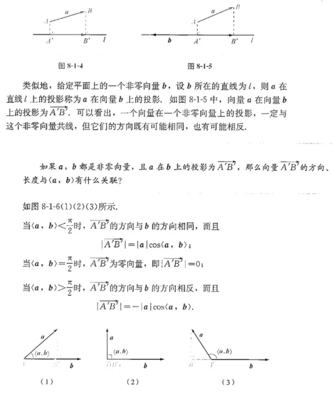
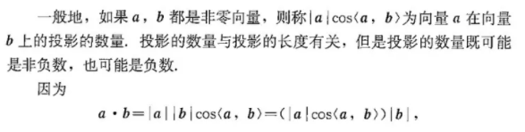
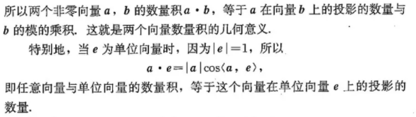
例:
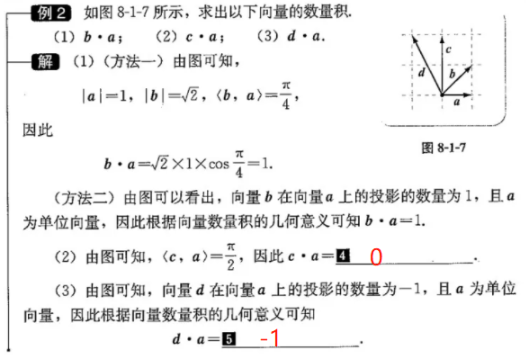
8.1.2 向量数量积的运算律
$a.b = b.a$
$(\lambda a).b = \lambda(a.b)$ (当a,b都是非零向量且λ≠0)
$(a + b) . c =a.c + b.c$ 证明如下:↓
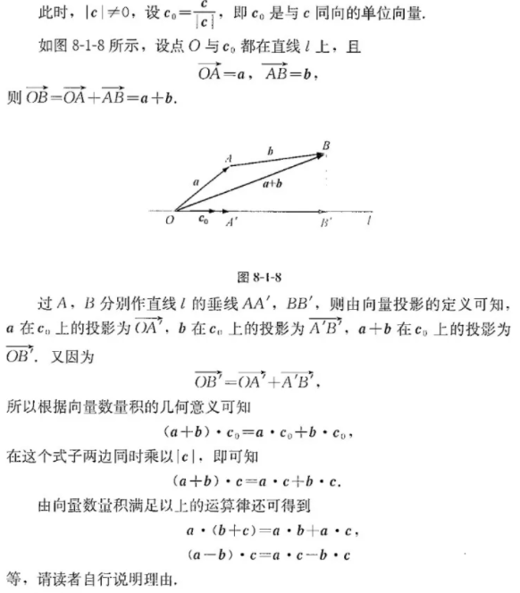
例2, 例3:
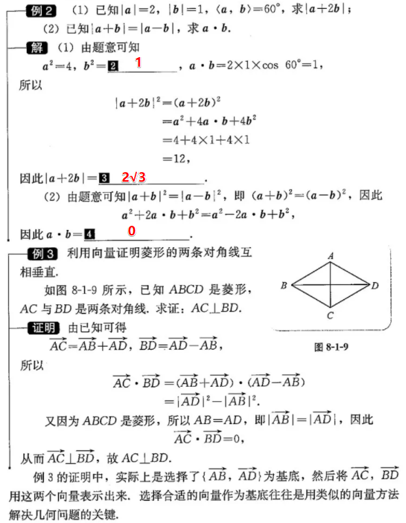
例4:
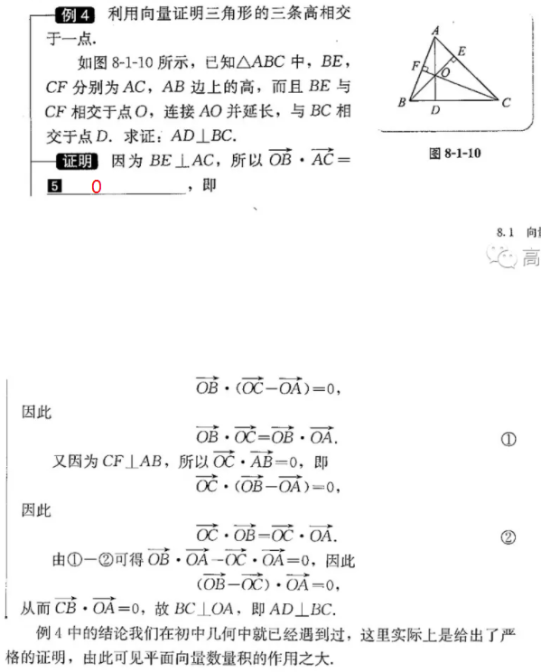
8.1.3 向量数量积的坐标运算
1.向量的坐标与向量的数量积
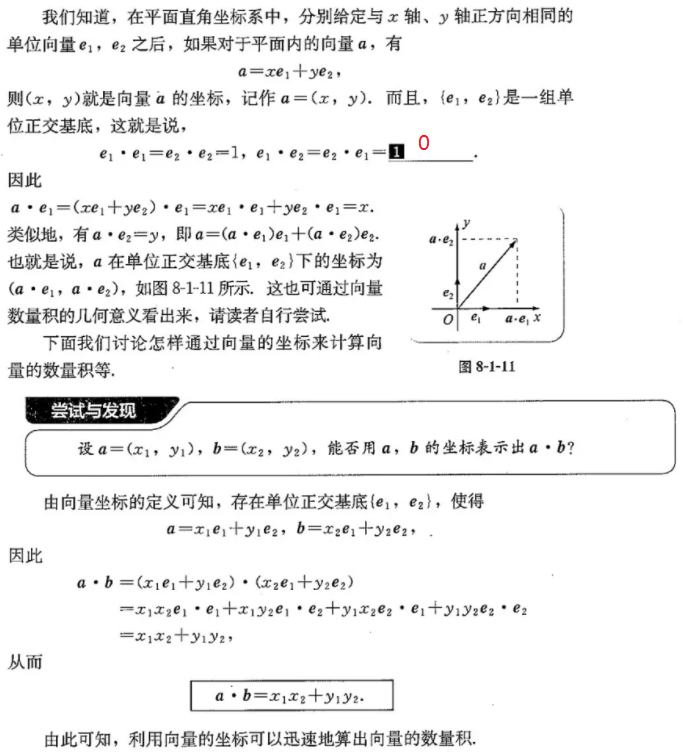
$\displaystyle a.b = x_1 x_2 + y_1 y_2$
后面还有一些内容没整理...
2.用向量的坐标表示两个向量垂直的条件
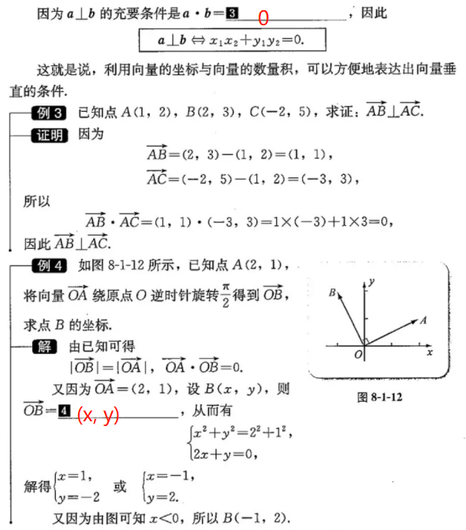
后面还有一些内容没整理...
8.2 三角恒等变换
8.2.1 两角和与差的余弦
$cos(\alpha - \beta) = cos \alpha \ cos \beta + sin \alpha \ sin \beta$
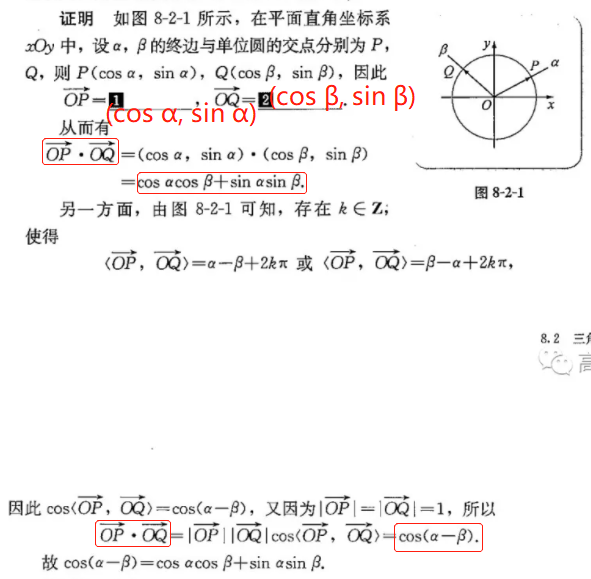
$cos(\alpha + \beta) = cos \alpha \ cos \beta - sin \alpha \ sin \beta$
证明:
cos(α + β) = cos(α - (-β))
= cosα.cos(-β) + sinα.sin(-β)
= cosα.cosβ - sinα.sinβ
8.2.2 两角和与差的正弦、正切
1.两角和与差的正弦
$sin(α + β) = sin α \ cosβ + cosα \ sinβ$
$sin(α - β) = sin α \ cosβ - cosα \ sinβ$
证明:
sin(α + β) = cos(($\pi \over 2$ - α) - β)
= cos($\pi \over 2$ - α)cosβ + sin($\pi \over 2$ - α)sinβ
=sinα cosβ + cosα sinβ
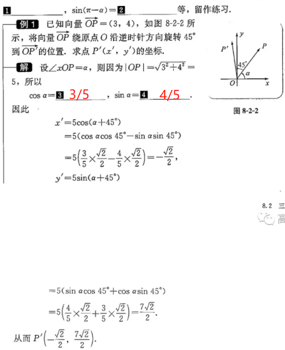
$asin x + bcos x = \sqrt {a^2 + b^2}$ sin(x + ϕ)
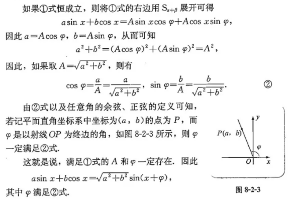
例:
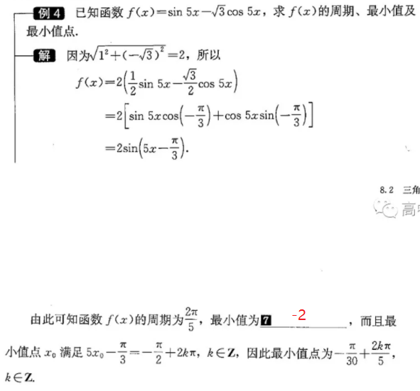
2.两角和与差的正切
tan(α + β) = $sin(α + β) \over cos(α + β)$
= $sinα \ cosβ + cosα \ sinβ \over {cosα \ cosβ - sinα \ sinβ}$ 分子分母同时除以cosα cosβ
= $tan α + tan β \over 1 - tan α \ tan β$
⇒ tan(α - β) = $tan α - tan β \over 1 + tan α \ tan β$
8.2.3 倍角公式
sin 2α = 2sinα cosα
cos 2α = $cos^2 α - sin^2 α$
tan 2α = $2 \ tan α \over 1 - tan^2 α$
cos 2α = $1 - 2sin^2 α$(∵$sin^2 α + cos^2 α = 1$)
8.2.4 三角恒等变换的应用
较难, 未整理...
拓展阅读: